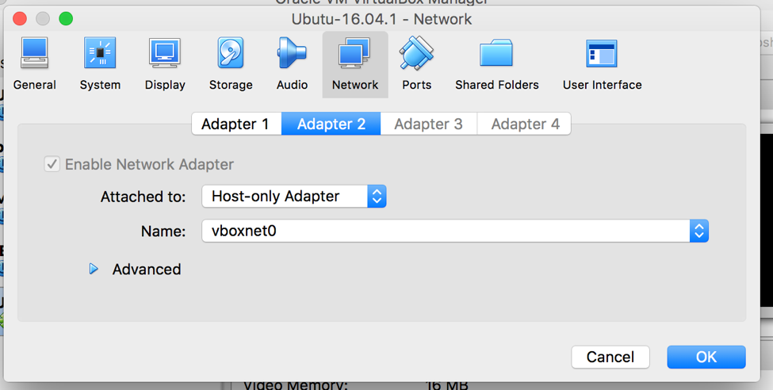

1.2.1. Create G-OnRamp Virtual Machine Image¶
1.2.1.1. Requirements¶
- Download and install Virtual Box => https://www.virtualbox.org
- Download Ubuntu Server 16.04.1 LTS => https://www.ubuntu.com/download/server
1.2.1.2. Step by step instruction¶
1.2.1.2.1. 1. Install Ubuntu server to the VirtualBox¶
See How to Install Ubuntu on VirtualBox
Additional settings when installing the Ubuntu
- Hostname: ubuntus
- Full name: galaxy
- User name: galaxy
- password: 2016
- Use entire disk and set up LVM
- No proxy configured
- Install security updates automatically
- Install LAMP server, PostgreSQL database, OpenSSH server
- Create new GRUB boot loader
1.2.1.2.2. 2. Initial Ubuntu setup¶
Start the Ubuntu and login in to update the system.
Update packages:
$ sudo apt-get update
$ sudo apt-get -u upgrade
Check for additional updates after reboot:
$ reboot
$ sudo apt-get update
$ apt-get --with-new-pkgs upgrade
$ reboot
Install dependencies:
$ sudo apt-get install build-essential
$ sudo apt-get install cmake
$ sudo apt-get install zlib1g-dev
1.2.1.2.3. 3. Set up internet host-only adapter (used to connect guest VM from host by ssh)¶
Shutdown the virtual machine and add vboxnet0 to Adapter 2 as Host-only Adapter. Then restart the virtual machine.
{kind=link}
On the host, type command:
$ ifconfig
Find the vboxnet0 ip:
vboxnet0: flags=8943<UP,BROADCAST,RUNNING,PROMISC,SIMPLEX,MULTICAST> mtu 1500
ether 0a:00:27:00:00:00
inet 192.168.56.1 netmask 0xffffff00 broadcast 192.168.56.255
On the Ubuntu guest, list interfaces by typing the command:
$ ip addr
You should see three interfaces like lo, enp0s3, enp0s8. We will use the third.
Edit the interfaces file by:
$ cd /etc/network/interfaces
Add following enp0s8 configuration to the file:
auto enp0s8
iface enp0s8 inet static
address 192.168.56.11
netmask 255.255.255.0
Then activate the interface:
$ sudo ifup enp0s8
Check if enp0s8 got correct address. You should see your ip by typing:
$ ip addr show enp0s8
...
inet 192.168.56.11/24 brd 192.168.56.255 scope global secondary enp0s8
If not correct, you may run:
$ sudo ifdown enp0s8
$ sudo ifup enp0s8
$ reboot
Now you can access to Ubuntu guest through host by:
$ ssh galaxy@192.168.56.11
1.2.1.2.4. 4. Install galaxy¶
Galaxy requires a few things to run: a virtualenv, configuration files and dependent python modules. Starting the server at the first time will set these thing up.
Download Galaxy 16.07:
$ git clone -b release_16.07 https://github.com/galaxyproject/galaxy.git
Install python:
$ sudo apt-get install python
Run Galaxy:
$ cd galaxy
$ sh run.sh
1.2.1.2.5. 5. Set up proxy¶
Set up the proxy to allow access to the Galaxy from the Browsers on the host.
Enable proxy modules for apache:
$ a2enmod proxy proxy_ajp proxy_http rewrite deflate headers proxy_balancer proxy_connect proxy_html
$ service apache2 restart
Make a new web server config file for Galaxy:
$ cd /etc/apache2/sites-available/
$ cp 000-default.conf 001-galaxy.conf
$ sudo vim 001-galaxy.conf
Add the following lines between <VirtualHost></VirtualHost> to /etc/apache2/sites-available/001-galaxy.conf:
<Proxy *>
Order deny,allow
Allow from all
</Proxy>
ProxyPreserveHost On
<Location "/gonramp">
ProxyPass "http://192.168.56.11:8080/"
ProxyPassReverse "http://192.168.56.11:8080/"
</location>
RewriteEngine on
RewriteRule ^/gonramp$ /gonramp/ [R]
RewriteRule ^/gonramp/static/style/(.*) /home/galaxy/galaxy/static/june_2007_style/blue/$1 [L]
RewriteRule ^/gonramp/static/scripts/(.*) /home/galaxy/galaxy/static/scripts/packed/$1 [L]
RewriteRule ^/gonramp/static/(.*) /home/galaxy/galaxy/static/$1 [L]
RewriteRule ^/gonramp/favicon.ico /home/galaxy/galaxy/static/favicon.ico [L]
RewriteRule ^/gonramp/robots.txt /home/galaxy/galaxy/static/robots.txt [L]
RewriteRule ^/gonramp(.*) http://192.168.56.11:8080$1 [P]
Enable the new site, disable the default site and reload the apache:
$ a2ensite 001-galaxy.conf
$ a2dissite 000-default.conf
$ service apache2 reload
1.2.1.2.6. 6. Set up Galaxy¶
1.2.1.2.6.1. Set proxy¶
Galaxy application needs to be aware that it is running with a prefix (for generating URLs in dynamic pages). This is accomplished by configuring a Paste proxy-prefix filter in the [app:main] section of config/galaxy.ini and restarting Galaxy:
[server:main]
host = 192.168.56.11
[filter:proxy-prefix]
use = egg:PasteDeploy#prefix
prefix = /gonramp
[app:main]
filter-with = proxy-prefix
cookie_path = /gonramp
1.2.1.2.6.2. Become an Admin¶
In order to install tools, you have to become administrator for your Galaxy instance. First start the server, go to http://192.168.56.11:8080/gonramp, and register as a new user with your email address.
Go to galaxy folder and find a sub-folder called config. Add a new file named galaxy.init in the config folder. You can copy the content of galaxy.init.sample into galaxy.init. In galaxy.init, search for the line containing “admin_users”. Add your user email address to admin users. (Replace None to your email address). You can add multiple admin users by appending another email and separating them with a comma:
# this should be a comma-separated list of valid Galaxy users
admin_users = None
1.2.1.2.6.3. Set up conda¶
In galaxy.init, uncomment and edit the following conda configuration:
conda_ensure_channels = conda-forge,r,bioconda,iuc
conda_auto_install = True
conda_auto_init = True
1.2.1.2.6.4. Connect your Galaxy to the test tool shed¶
Galaxy is connected to the Main Tool Shed by default. Since some tools in G-OnRamp workflow are in the Test Tool Shed, you need to connect to the Test Tool Shed by modifying the “tool_sheds_conf.xml” in config folder:
# Copy the “tool_sheds_conf.xml.sample” and rename it to “tool_sheds_conf.xml”
$ cd /home/galaxy/config
$ cp tool_sheds_conf.xml.sample tool_sheds_conf.xml
# Open the file
$ vim tool_sheds_conf.xml
Uncomment the lines for the Test Tool Shed:
<?xml version="1.0"?>
<tool_sheds>
<tool_shed name="Galaxy Main Tool Shed" url="https://toolshed.g2.bx.psu.edu/"/>
<!-- Test Tool Shed should be used only for testing purposes.
<tool_shed name="Galaxy Test Tool Shed" url="https://testtoolshed.g2.bx.psu.edu/"/>
-->
</tool_sheds>
To:
<?xml version="1.0"?>
<tool_sheds>
<tool_shed name="Galaxy Main Tool Shed" url="https://toolshed.g2.bx.psu.edu/"/>
<tool_shed name="Galaxy Test Tool Shed" url="https://testtoolshed.g2.bx.psu.edu/"/>
</tool_sheds>
1.2.1.2.6.5. Add necessary datatypes¶
Copy the “datatypes_conf.xml.sample” and rename it to “datatypes_conf.xml”. Add the line below in between <registration></registration>:
<datatype extension="psl" subclass="True" type="galaxy.datatypes.tabular:Tabular" />
1.2.1.2.6.6. Other files should be ready (copy from .sample)¶
$ cp dependency_resolvers_conf.xml.sample dependency_resolvers_conf.xml
Restart the server after you modified the configuration files. You can hit Ctrl-c to stop the server and then start again.
1.2.1.2.7. 7. Install G-OnRamp tools¶
Go to Admin page, and click on Search Tool Shed. Click on the Tool Sheds to search and install. You can add all G-OnRamp tools in a separate panel section by adding a new tool panel section when you install the first tool and then add all the rest tools in the same panel.
1.2.1.2.7.1. Click on Galaxy Main Tool Shed to install¶
- ncbi_blast_plus (by devteam)
- Augustus
- HISAT2
- StringTie (1.1.0)
- blastXmlToPsl
- TrfBig
- pslToBed
- bamtobigwig
- hubarchivecreator
- multi_fasta_glimmer_hmm
1.2.1.2.7.2. Click on Galaxy Test Tool Shed to install¶
- snap
1.2.1.2.7.3. Tools need advanced configuration¶
- multi_fasta_glimmer_hmm
Make a Dependencies folder in “/home/galaxy” and download Glimmer3 inside the folder by:
$ mkdir Dependencies
$ cd ~/Dependencies
$ wget ftp://ccb.jhu.edu/pub/software/glimmerhmm/GlimmerHMM-3.0.4.tar.gz
Rename glimmerhmm executable file (glimmerhmm_linux_x86_64) to glimmerhmm and then add glimmerhmm to the path (in .bashrc).
You also need to use a trained organism by adding them as reference data in Galaxy:
Add the glimmer_hmm_trained_dir data table to tool_data_table_conf.xml in $GALAXY_ROOT/config/:
<!-- glimmer_hmm trained_dir -->
<table name="glimmer_hmm_trained_dir" comment_char="#">
<columns>value, name, path</columns>
<file path="tool-data/glimmer_hmm.loc" />
</table>
Add the glimmer_hmm.loc file referencing your trained organism, in tool-data. Uncomment the species and add the path to trained_dir.
- TrfBig
Because trf executable file is not renamed to trf successfully, so it needs to be renamed manually.
Go to installation path of trf:
$ cd /home/galaxy/galaxy/database/dependencies/trf/4.07b/rmarenco/trfbig/e45bd0ffc1a4/bin
$ mv trf407b.linux64 trf
- Bam to Bigwig
libstdc++.so.6: version `GLIBCXX_3.4.20’ not found, maybe because it is not using the right libstdc++.so.6. Delete the installed libstdc++.so.6 in the tool dependencies, so that the tool can use the system version of libstdc++.so.6:
$ cd /home/galaxy/galaxy/database/dependencies/ucsc_tools/312/iuc/package_ucsc_tools_312/2d6bafd63401/lib/
$ rm libstdc++.so.6